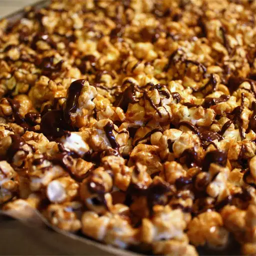

Caramel Chocolate Corn

Savoury snack that you can't stay away from!
Ingredients
- Popped Popcorn
- Roasted Peanuts
- Brown Sugar
- Butter
- Light Corn Syrup
- Vanilla Extract
- Salt
- Baking Soda
- Milk chocolate chips
- teaspoon shortening
Steps
- Grease cookie sheets.
- Place popcorn and peanuts in a paper bag. Set aside.
- In a microwave safe bowl, combine sugar, butter, corn syrup, vanilla and salt. Microwave 4 minutes, until bubbly. Stir in baking soda. Pour over popcorn mixture and shake bag to coat.
- Roll down edges of bag and place bag in microwave. Heat for 2 minutes, shaking three times to mix. Spread mixture onto prepared sheets to cool.
- In a microwave safe bowl, combine chocolate and shortening. Microwave 90 seconds, stirring once, until melted. Drizzle over popcorn mixture. Let cool before serving.